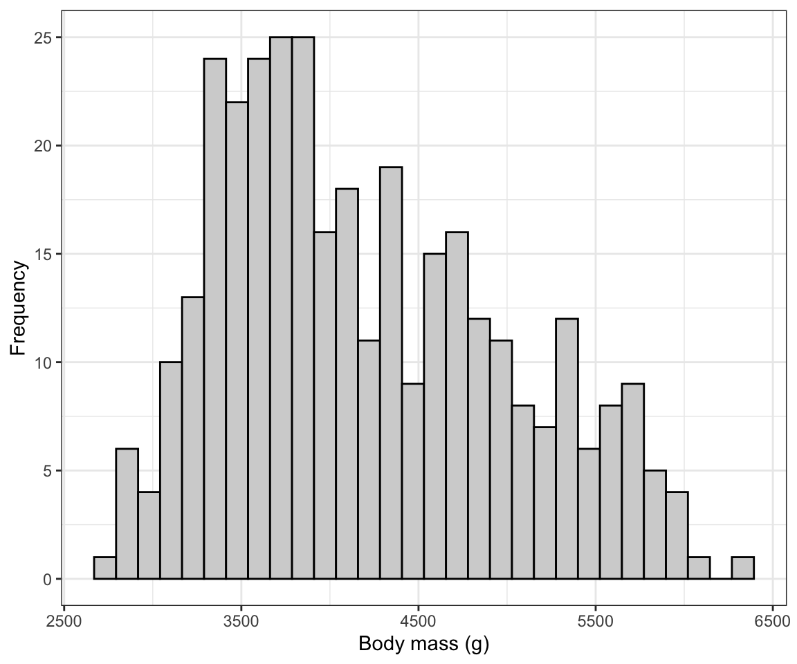
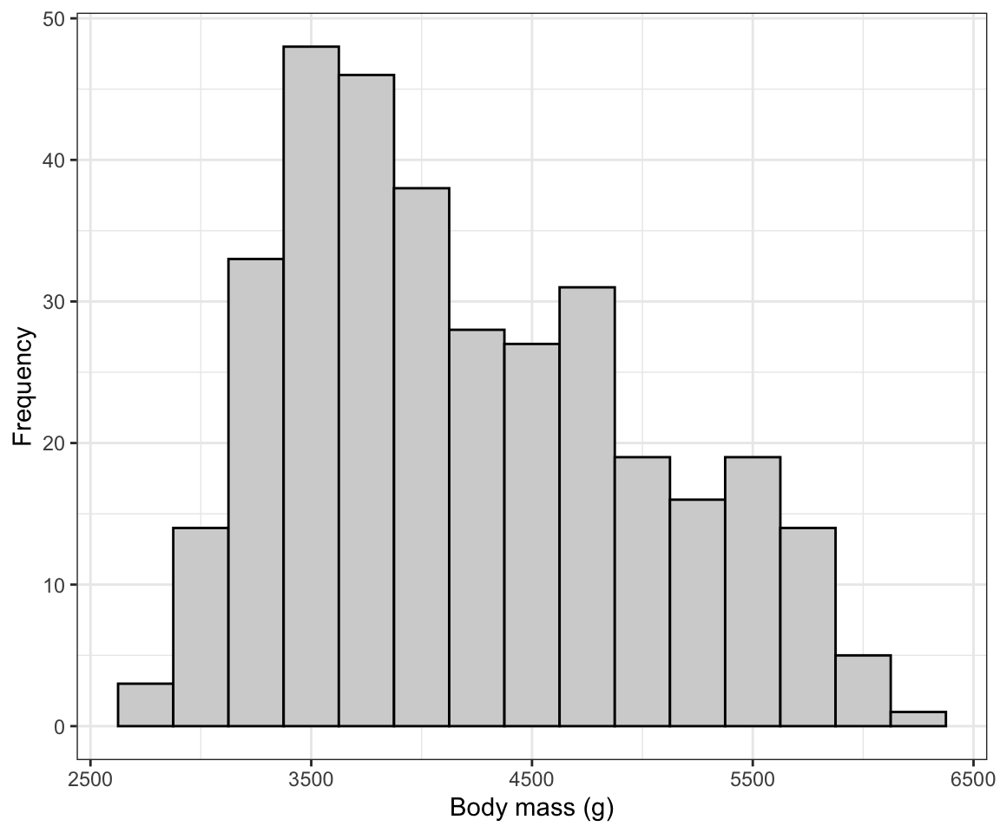
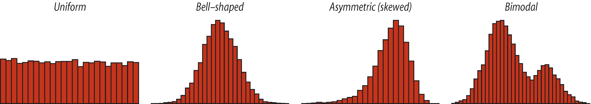

2.5 Visualizing and describing a single numeric variable
2.5.1 Displaying the frequency distribution for one numerical variable
We start by examining the frequency distribution of the variable of interest, which is the number of occurrences (cases) of all values in the data. In this case, the data are numerical.
With numerical variables, such as the height_cm variable in the students dataset, it typically does not make sense to tabulate each unique value in the data (as we do with categorical variables) because there may be many, many values with only a single occurrence. Instead, intervals are created, and and the number of occurrences of values within each interval is tallied.
It is relatively uncommon in practice to report a frequency table for a numeric variable. Much more common is to proceed directly to graphically displaying the frequency distribution using a histogram.
2.5.2 Creating a histogram
A histogram uses the area of rectangular bars to display the frequency distribution (or relative frequency distribution) of a numerical variable.
We’ll use ggplot2 to create a histogram.
Please do work through the material below, as it will help you understand the overall ggplot approach.
We won’t be going into ggplot2 functionality in too much detail in the course tutorials, so if you’re curious, I recommend you check out this tutorial. Specifically, it helps explain the “grammar of graphics” behind the syntax of ggplot.
We’ll give the code first, then explain below:
ggplot(data = students, aes(x = height_cm)) +
geom_histogram(binwidth = 5, color = "black", fill = "lightgrey") +
xlab("Height (cm)") +
ylab("Frequency") +
theme_bw()
The syntax follows what was seen above when creating a bar chart. Here we have only an “x” variable, height_cm.
The geom_histogram function has its own arguments:
- what bin width (interval) should we use for lumping the height data into? You may need to adjust this with trial and error, and you could actually use the hist function (see above) to see what bin width it used… we see that it used 5cm as the bid width, so that’s what we used here
- what “color” we want the outlines of each bar in the histogram to be
- what “fill” colour we want the bars to be
Voila! Your first ggplot histogram!
We can also assign the output from the ggplot function to an object, as so:
height.hist <- ggplot(data = students, aes(x = height_cm)) +
geom_histogram(binwidth = 5, color = "black", fill = "lightgrey") +
xlab("Height (cm)") +
ylab("Frequency")And then we can add more functions with the “+” sign, and see the result:
height.hist.bw <- height.hist + theme_bw()
height.hist.bw
2.5.3 Interpreting and describing histograms
Frequency distributions for numerical variables can take on a variety of shapes, as shown in the following display of histograms:

Use the image above as a guide on how to describe a histogram. Note that the asymmetric distribution displayed above is skewed left.
Things to note in your description:
- outliers - are there observations (bars) showing up far from the others?
- multiple modes (as in the “bimodal” example above)
- is it symmetric?
- is it roughly bell-shaped?
Typically your histogram and its description would be accompanied by descriptive statistics (see below).
2.5.4 Calculating descriptive statistics for a numerical variable
When describing a numeric variable, calculate and report the mean and standard deviation as measures of centre and spread, respectively
If the frequency distribution is roughly symmetric and does not have any obvious outliers, the mean and the standard deviation are the preferred measures of centre and spread
If the frequency distribution is asymmetric and / or has outliers, the median and the inter-quartile range (IQR) are the preferred measures of centre and spread, and in this case, one often sees these reported in addition to the mean and standard deviation
2.5.4.1 Introducing the summarise function
The dplyr package has a handy summarise (equivalently summarize) function for calculating descriptive statistics.
Here, let’s calculate the mean height of students first:
summarise(students, mean(height_cm, na.rm = T))## mean(height_cm, na.rm = T)
## 1 171.9712We first tell it the dataframe or tibble to use for calculations, here students. Then we simply use the standard functions that come with the base R, here the mean function.
The “na.rm = T” argument ensures that if there are any missing values (NA values),they are removed for the calculation. This must be done for each of the descriptive statistics functions.
Notice that the output from the above code is rather untidy: it returns the entire function text above the resulting number.
We can fix that, as shown below.
summarise(students, mean.ht = mean(height_cm, na.rm = T))## mean.ht
## 1 171.9712What we’ve done here is created a new variable, called “mean.ht,” to hold the output from the mean function.
Now, we typically wish to report multiple descriptive statistics, say, the mean and the standard deviation. To do this, we can include more than one function as arguments to the summarise function:
summarise(students,
mean.ht = mean(height_cm, na.rm = T),
sd.ht = sd(height_cm, na.rm = T)
)## mean.ht sd.ht
## 1 171.9712 10.02728IMPORTANT: here we have wrapped the code across 4 lines, so as to keep it organized and legible. Notice that there’s a comma at the end of the first two lines: this tells R that there are more arguments coming for the main function. We stop providing commas once we’re done providing arguments, and we can close up the last parenthesis.
Now let’s calculate the mean, median, variance, standard deviation, and IQR of height_cm:
summarise(students,
mean.ht = mean(height_cm, na.rm = T),
median.ht = median(height_cm, na.rm = T),
variance.ht = var(height_cm, na.rm = T),
sd.ht = sd(height_cm, na.rm = T),
iqr.ht = IQR(height_cm, na.rm = T),
count.ht = n(),
count.missing.vals = naniar::n_miss(height_cm))## mean.ht median.ht variance.ht sd.ht iqr.ht count.ht count.missing.vals
## 1 171.9712 171.475 100.5463 10.02728 15 154 0This is an important piece of information to include in your data description, because one needs to know how many observations went into calculating the descriptive statistics. It is also crucial to report this number in figures.
For example:
Figure 2.1: Fig. 1: Histogram of height for 154 students